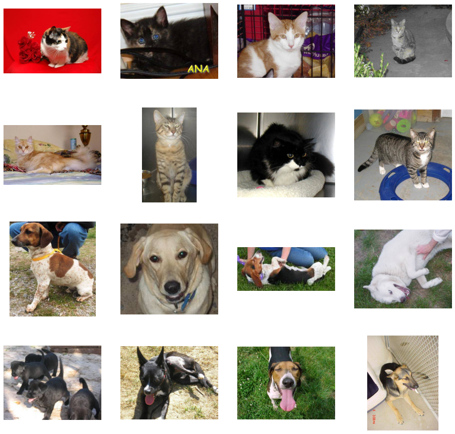
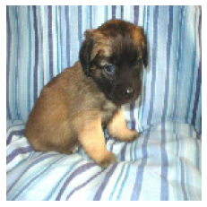
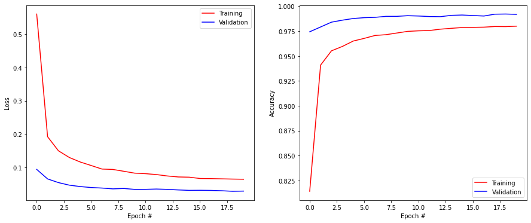
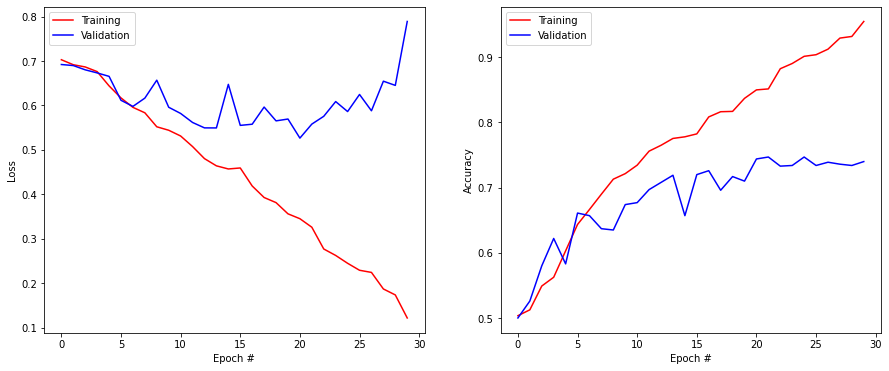
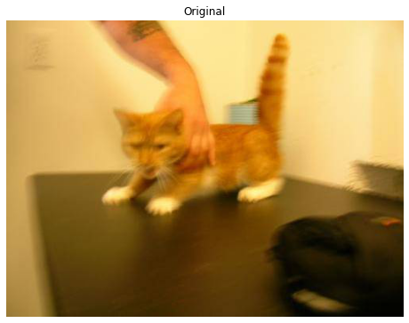
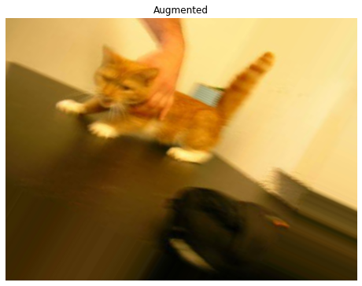
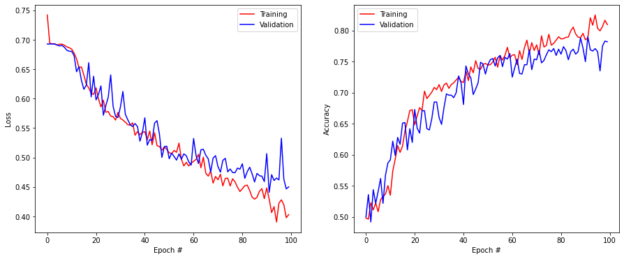
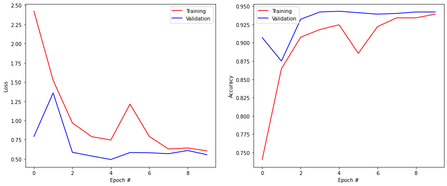

import numpy as np
import matplotlib.pyplot as plt
rng = np.random.default_rng()
import tensorflow as tfTransfer learning
The goal of the exercise is to investigate data augmentation and transfer learning on a very small dataset (2000 training images).
The code is based on the keras tutorial:
The data is provided as part of a Google tutorial:
Loading the cats and dogs data
The data we will use is a subset of the “Dogs vs. Cats” dataset dataset available on Kaggle, which contains 25,000 images. Here, we use only 1000 dogs and 1000 cats to decrease training time and make the problem harder.
The following cell downloads the data and decompresses it in /tmp/ (it will be erased at the next restart of your computer).
!wget --no-check-certificate \
https://storage.googleapis.com/mledu-datasets/cats_and_dogs_filtered.zip \
-O /tmp/cats_and_dogs_filtered.zip
import os
import zipfile
local_zip = '/tmp/cats_and_dogs_filtered.zip'
zip_ref = zipfile.ZipFile(local_zip, 'r')
zip_ref.extractall('/tmp')
zip_ref.close()--2020-12-23 11:23:19-- https://storage.googleapis.com/mledu-datasets/cats_and_dogs_filtered.zip
Resolving storage.googleapis.com (storage.googleapis.com)... 172.253.63.128, 142.250.31.128, 172.217.7.176, ...
Connecting to storage.googleapis.com (storage.googleapis.com)|172.253.63.128|:443... connected.
HTTP request sent, awaiting response... 200 OK
Length: 68606236 (65M) [application/zip]
Saving to: ‘/tmp/cats_and_dogs_filtered.zip’
/tmp/cats_and_dogs_ 100%[===================>] 65.43M 183MB/s in 0.4s
2020-12-23 11:23:20 (183 MB/s) - ‘/tmp/cats_and_dogs_filtered.zip’ saved [68606236/68606236]
All we have is a bunch of *.jpg images organized in a training and validation set, separated by their binary class dog vs. cat:
cats_and_dogs_filtered/
train/
dogs/
dog001.jpg
dog002.jpg
...
cats/
cat001.jpg
cat002.jpg
...
validation/
dogs/
dog001.jpg
dog002.jpg
...
cats/
cat001.jpg
cat002.jpg
...Feel free to download the data on your computer and have a look at the images directly.
The next cell checks the structure of the image directory:
base_dir = '/tmp/cats_and_dogs_filtered'
train_dir = base_dir + '/train'
validation_dir = base_dir + '/validation'
print('total training cat images:', len(os.listdir(train_dir + '/cats')))
print('total training dog images:', len(os.listdir(train_dir + '/dogs')))
print('total validation cat images:', len(os.listdir(validation_dir + '/cats')))
print('total validation dog images:', len(os.listdir(validation_dir + '/dogs')))total training cat images: 1000
total training dog images: 1000
total validation cat images: 500
total validation dog images: 500The next cell visualizes some cats and dogs from the training set.
import matplotlib.image as mpimg
fig = plt.figure(figsize=(16, 16))
idx = rng.choice(1000-8, 1)[0]
next_cat_pix = [os.path.join(train_dir + '/cats', fname) for fname in os.listdir(train_dir + '/cats')[idx:idx+8]]
next_dog_pix = [os.path.join(train_dir + '/dogs', fname) for fname in os.listdir(train_dir + '/dogs')[idx:idx+8]]
for i, img_path in enumerate(next_cat_pix+next_dog_pix):
# Set up subplot; subplot indices start at 1
ax = plt.subplot(4, 4, i + 1)
ax.axis('Off') # Don't show axes (or gridlines)
img = mpimg.imread(img_path)
plt.imshow(img)
plt.show()
In order to train a binary classifier on this data, we would need to load the images and transform them into Numpy arrays that can be passed to tensorflow. Fortunately, keras provides an utility to do it automatically: ImageDataGenerator. Doc:
https://keras.io/api/preprocessing/image/
The procedure is to create an ImageDataGenerator instance and to create an iterator with flow_from_directory that will return minibatches on demand when training the neural network. The main advantage of this approach is that you do not need to load the whole dataset in the RAM (not possible for most realistic datasets), but adds an overhead between each minibatch.
datagen = tf.keras.preprocessing.image.ImageDataGenerator(rescale=1./255)
generator = datagen.flow_from_directory(
directory, # This is the source directory for training images
target_size=(150, 150), # All images will be resized to 150x150
batch_size=64,
# Since we use binary_crossentropy loss, we need binary labels
class_mode='binary')The rescale argument makes sure that the pixels will be represented by float values between 0 and 1, not integers between 0 and 255. Unfortunately, it is not possible (or very hard) to perform mean-removal using this method. The image data generator accepts additional arguments that we will discuss in the section on data augmentation. directory must be set to the folder containing the images. We ask the generator to resize all images to 150x150 and will use a batch size of 64. As there are only two classes cat and dog, the labels will be binary (0 and 1).
Q: Create two generators train_generator and validation_generator for the training and validation sets respectively, with a batch size of 64.
# All images will be rescaled by 1./255
train_datagen = tf.keras.preprocessing.image.ImageDataGenerator(rescale=1./255)
val_datagen = tf.keras.preprocessing.image.ImageDataGenerator(rescale=1./255)
# Flow training images in batches
train_generator = train_datagen.flow_from_directory(
train_dir,
target_size=(150, 150),
batch_size=64,
class_mode='binary')
# Flow validation images in batches
validation_generator = val_datagen.flow_from_directory(
validation_dir,
target_size=(150, 150),
batch_size=64,
class_mode='binary')Found 2000 images belonging to 2 classes.
Found 1000 images belonging to 2 classes.Q: Sample a minibatch from the training generator by calling next() on it (X, t = train_generator.next()) and display the first image. Call the cell multiple times.
X, t = train_generator.next()
print(X.shape)
plt.figure()
plt.imshow(X[0, :, :, :])
plt.axis("Off")
plt.show()(64, 150, 150, 3)
Functional API of Keras
In the previous exercises, we used the Sequential API of keras, which stacks layers on top of each other:
model = tf.keras.Sequential()
model.add(tf.keras.layers.Input((28, 28, 1)))
model.add(tf.keras.layers.Conv2D(32, (3, 3), activation='relu')
model.add(tf.keras.layers.MaxPooling2D(pool_size=(2, 2)))
model.add(tf.keras.layers.Flatten())
model.add(tf.keras.layers.Dense(10, activation='softmax'))In this exercise, we will use the Functional API of keras, which gives much more freedom to the programmer. The main difference is that you can explicitly specify from which layer a layer should take its inputs:
inputs = tf.keras.layers.Input((28, 28, 1))
x = tf.keras.layers.Conv2D(32, (3, 3), activation='relu')(inputs)
x = tf.keras.layers.MaxPooling2D(pool_size=(2, 2))(x)
x = tf.keras.layers.Flatten()(x)
outputs = tf.keras.layers.Dense(10, activation='softmax')(x)
model = tf.keras.Model(inputs, outputs)This allows to create complex architectures, for examples with several output layers.
Q: Modify your CNN of last exercise so that it is defined with the Functional API and train it on MNIST.
# Fetch the MNIST data
(X_train, t_train), (X_test, t_test) = tf.keras.datasets.mnist.load_data()
print("Training data:", X_train.shape, t_train.shape)
print("Test data:", X_test.shape, t_test.shape)
# Normalize the values
X_train = X_train.reshape(-1, 28, 28, 1).astype('float32') / 255.
X_test = X_test.reshape(-1, 28, 28, 1).astype('float32') / 255.
# Mean removal
X_mean = np.mean(X_train, axis=0)
X_train -= X_mean
X_test -= X_mean
# One-hot encoding
T_train = tf.keras.utils.to_categorical(t_train, 10)
T_test = tf.keras.utils.to_categorical(t_test, 10)
# Delete all previous models to free memory
tf.keras.backend.clear_session()
# Functional model
inputs = tf.keras.layers.Input((28, 28, 1))
x = tf.keras.layers.Conv2D(32, (3, 3), activation='relu', padding='valid')(inputs)
x = tf.keras.layers.MaxPooling2D(pool_size=(2, 2))(x)
x = tf.keras.layers.Dropout(0.5)(x)
x = tf.keras.layers.Conv2D(64, (3, 3), activation='relu', padding='valid')(x)
x = tf.keras.layers.MaxPooling2D(pool_size=(2, 2))(x)
x = tf.keras.layers.Dropout(0.5)(x)
x = tf.keras.layers.Flatten()(x)
x = tf.keras.layers.Dense(150, activation='relu')(x)
x = tf.keras.layers.Dropout(0.5)(x)
outputs = tf.keras.layers.Dense(10, activation='softmax')(x)
model = tf.keras.Model(inputs, outputs)
# Learning rule
optimizer = tf.keras.optimizers.SGD(lr=0.01, decay=1e-6, momentum=0.9, nesterov=True)
# Loss function
model.compile(
loss='categorical_crossentropy', # loss
optimizer=optimizer, # learning rule
metrics=['accuracy'] # show accuracy
)
print(model.summary())
history = tf.keras.callbacks.History()
model.fit(
X_train, T_train,
batch_size=64,
epochs=20,
validation_split=0.1,
callbacks=[history]
)
score = model.evaluate(X_test, T_test, verbose=0)
print('Test loss:', score[0])
print('Test accuracy:', score[1])
plt.figure(figsize=(15, 6))
plt.subplot(121)
plt.plot(history.history['loss'], '-r', label="Training")
plt.plot(history.history['val_loss'], '-b', label="Validation")
plt.xlabel('Epoch #')
plt.ylabel('Loss')
plt.legend()
plt.subplot(122)
plt.plot(history.history['accuracy'], '-r', label="Training")
plt.plot(history.history['val_accuracy'], '-b', label="Validation")
plt.xlabel('Epoch #')
plt.ylabel('Accuracy')
plt.legend()
plt.show()Downloading data from https://storage.googleapis.com/tensorflow/tf-keras-datasets/mnist.npz
11493376/11490434 [==============================] - 0s 0us/step
Training data: (60000, 28, 28) (60000,)
Test data: (10000, 28, 28) (10000,)
Model: "model"
_________________________________________________________________
Layer (type) Output Shape Param #
=================================================================
input_1 (InputLayer) [(None, 28, 28, 1)] 0
_________________________________________________________________
conv2d (Conv2D) (None, 26, 26, 32) 320
_________________________________________________________________
max_pooling2d (MaxPooling2D) (None, 13, 13, 32) 0
_________________________________________________________________
dropout (Dropout) (None, 13, 13, 32) 0
_________________________________________________________________
conv2d_1 (Conv2D) (None, 11, 11, 64) 18496
_________________________________________________________________
max_pooling2d_1 (MaxPooling2 (None, 5, 5, 64) 0
_________________________________________________________________
dropout_1 (Dropout) (None, 5, 5, 64) 0
_________________________________________________________________
flatten (Flatten) (None, 1600) 0
_________________________________________________________________
dense (Dense) (None, 150) 240150
_________________________________________________________________
dropout_2 (Dropout) (None, 150) 0
_________________________________________________________________
dense_1 (Dense) (None, 10) 1510
=================================================================
Total params: 260,476
Trainable params: 260,476
Non-trainable params: 0
_________________________________________________________________
None
Epoch 1/20
844/844 [==============================] - 6s 4ms/step - loss: 1.0319 - accuracy: 0.6409 - val_loss: 0.0941 - val_accuracy: 0.9743
Epoch 2/20
844/844 [==============================] - 3s 3ms/step - loss: 0.2102 - accuracy: 0.9361 - val_loss: 0.0655 - val_accuracy: 0.9792
Epoch 3/20
844/844 [==============================] - 3s 3ms/step - loss: 0.1580 - accuracy: 0.9532 - val_loss: 0.0545 - val_accuracy: 0.9840
Epoch 4/20
844/844 [==============================] - 3s 4ms/step - loss: 0.1308 - accuracy: 0.9607 - val_loss: 0.0468 - val_accuracy: 0.9860
Epoch 5/20
844/844 [==============================] - 3s 3ms/step - loss: 0.1167 - accuracy: 0.9658 - val_loss: 0.0426 - val_accuracy: 0.9877
Epoch 6/20
844/844 [==============================] - 3s 3ms/step - loss: 0.1074 - accuracy: 0.9667 - val_loss: 0.0397 - val_accuracy: 0.9885
Epoch 7/20
844/844 [==============================] - 3s 4ms/step - loss: 0.0989 - accuracy: 0.9690 - val_loss: 0.0381 - val_accuracy: 0.9888
Epoch 8/20
844/844 [==============================] - 3s 3ms/step - loss: 0.0961 - accuracy: 0.9706 - val_loss: 0.0357 - val_accuracy: 0.9898
Epoch 9/20
844/844 [==============================] - 3s 4ms/step - loss: 0.0868 - accuracy: 0.9741 - val_loss: 0.0369 - val_accuracy: 0.9898
Epoch 10/20
844/844 [==============================] - 3s 4ms/step - loss: 0.0875 - accuracy: 0.9737 - val_loss: 0.0341 - val_accuracy: 0.9905
Epoch 11/20
844/844 [==============================] - 3s 4ms/step - loss: 0.0799 - accuracy: 0.9758 - val_loss: 0.0343 - val_accuracy: 0.9902
Epoch 12/20
844/844 [==============================] - 3s 4ms/step - loss: 0.0788 - accuracy: 0.9753 - val_loss: 0.0352 - val_accuracy: 0.9897
Epoch 13/20
844/844 [==============================] - 3s 4ms/step - loss: 0.0745 - accuracy: 0.9764 - val_loss: 0.0342 - val_accuracy: 0.9895
Epoch 14/20
844/844 [==============================] - 3s 4ms/step - loss: 0.0707 - accuracy: 0.9787 - val_loss: 0.0325 - val_accuracy: 0.9908
Epoch 15/20
844/844 [==============================] - 3s 3ms/step - loss: 0.0693 - accuracy: 0.9790 - val_loss: 0.0312 - val_accuracy: 0.9912
Epoch 16/20
844/844 [==============================] - 3s 3ms/step - loss: 0.0696 - accuracy: 0.9779 - val_loss: 0.0314 - val_accuracy: 0.9907
Epoch 17/20
844/844 [==============================] - 3s 4ms/step - loss: 0.0642 - accuracy: 0.9789 - val_loss: 0.0311 - val_accuracy: 0.9902
Epoch 18/20
844/844 [==============================] - 3s 4ms/step - loss: 0.0636 - accuracy: 0.9804 - val_loss: 0.0300 - val_accuracy: 0.9920
Epoch 19/20
844/844 [==============================] - 3s 3ms/step - loss: 0.0643 - accuracy: 0.9797 - val_loss: 0.0284 - val_accuracy: 0.9922
Epoch 20/20
844/844 [==============================] - 3s 3ms/step - loss: 0.0658 - accuracy: 0.9793 - val_loss: 0.0290 - val_accuracy: 0.9918
Test loss: 0.023223621770739555
Test accuracy: 0.9914000034332275
Training a CNN from scratch
Let’s now train a randomly-initialized CNN on the dog vs. cat data. You are free to choose any architecture you like, the only requirements are:
- The input image must be 150x150x3:
tf.keras.layers.Input(shape=(150, 150, 3))- The output neuron must use the logistic/sigmoid activation function (binary classification:
tf.keras.layers.Dense(1, activation='sigmoid')- The loss function must be
'binary_crossentropy'and the metricbinary_accuracy:
model.compile(loss='binary_crossentropy',
optimizer=optimizer,
metrics=['binary_accuracy'])There is not a lot of data, so you can safely go deep with your architecture (i.e. with convolutional layers and max-pooling until the image dimensions are around 7x7), especially if you use the GPU on Colab.
To train and validate the network on the generators, just pass them to model.fit():
model.fit(
train_generator,
epochs=20,
validation_data=validation_generator,
callbacks=[history])Q: Design a CNN and train it on the data for 30 epochs. A final validation accuracy around 72% - 75% is already good, you can then go to the next question.
def random_model():
# Delete all previous models to free memory
tf.keras.backend.clear_session()
# Our input feature map is 150x150x3: 150x150 for the image pixels, and 3 for
# the three color channels: R, G, and B
inputs = tf.keras.layers.Input(shape=(150, 150, 3))
# First convolution extracts 16 filters that are 3x3
# Convolution is followed by max-pooling layer with a 2x2 window
x = tf.keras.layers.Conv2D(16, 3)(inputs)
x = tf.keras.layers.Activation("relu")(x)
x = tf.keras.layers.MaxPooling2D(2)(x)
x = tf.keras.layers.Dropout(0.2)(x)
# Second convolution extracts 32 filters that are 3x3
# Convolution is followed by max-pooling layer with a 2x2 window
x = tf.keras.layers.Conv2D(32, 3)(x)
x = tf.keras.layers.Activation("relu")(x)
x = tf.keras.layers.MaxPooling2D(2)(x)
x = tf.keras.layers.Dropout(0.2)(x)
# Third convolution extracts 64 filters that are 3x3
# Convolution is followed by max-pooling layer with a 2x2 window
x = tf.keras.layers.Conv2D(64, 3)(x)
x = tf.keras.layers.Activation("relu")(x)
x = tf.keras.layers.MaxPooling2D(2)(x)
x = tf.keras.layers.Dropout(0.2)(x)
# Fourth convolution extracts 64 filters that are 3x3
# Convolution is followed by max-pooling layer with a 2x2 window
x = tf.keras.layers.Conv2D(64, 3)(x)
x = tf.keras.layers.Activation("relu")(x)
x = tf.keras.layers.MaxPooling2D(2)(x)
x = tf.keras.layers.Dropout(0.2)(x)
# Flatten feature map to a 1-dim tensor so we can add fully connected layers
x = tf.keras.layers.Flatten()(x)
# Create a fully connected layer with ReLU activation and 512 hidden units
x = tf.keras.layers.Dense(512, activation='relu')(x)
x = tf.keras.layers.Dropout(0.2)(x)
# Create output layer with a single node and sigmoid activation
outputs = tf.keras.layers.Dense(1, activation='sigmoid')(x)
# Create model:
# input = input feature map
# output = input feature map + stacked convolution/maxpooling layers + fully
# connected layer + sigmoid output layer
model = tf.keras.Model(inputs, outputs)
# Compile model for binary classification
model.compile(loss='binary_crossentropy',
optimizer=tf.keras.optimizers.Adam(lr=0.0005),
metrics=['binary_accuracy'])
print(model.summary())
return modelmodel = random_model()
history = tf.keras.callbacks.History()
model.fit(
train_generator,
epochs=30,
validation_data=validation_generator,
callbacks=[history])
plt.figure(figsize=(15, 6))
plt.subplot(121)
plt.plot(history.history['loss'], '-r', label="Training")
plt.plot(history.history['val_loss'], '-b', label="Validation")
plt.xlabel('Epoch #')
plt.ylabel('Loss')
plt.legend()
plt.subplot(122)
plt.plot(history.history['binary_accuracy'], '-r', label="Training")
plt.plot(history.history['val_binary_accuracy'], '-b', label="Validation")
plt.xlabel('Epoch #')
plt.ylabel('Accuracy')
plt.legend()
plt.show()Model: "model"
_________________________________________________________________
Layer (type) Output Shape Param #
=================================================================
input_1 (InputLayer) [(None, 150, 150, 3)] 0
_________________________________________________________________
conv2d (Conv2D) (None, 148, 148, 16) 448
_________________________________________________________________
activation (Activation) (None, 148, 148, 16) 0
_________________________________________________________________
max_pooling2d (MaxPooling2D) (None, 74, 74, 16) 0
_________________________________________________________________
dropout (Dropout) (None, 74, 74, 16) 0
_________________________________________________________________
conv2d_1 (Conv2D) (None, 72, 72, 32) 4640
_________________________________________________________________
activation_1 (Activation) (None, 72, 72, 32) 0
_________________________________________________________________
max_pooling2d_1 (MaxPooling2 (None, 36, 36, 32) 0
_________________________________________________________________
dropout_1 (Dropout) (None, 36, 36, 32) 0
_________________________________________________________________
conv2d_2 (Conv2D) (None, 34, 34, 64) 18496
_________________________________________________________________
activation_2 (Activation) (None, 34, 34, 64) 0
_________________________________________________________________
max_pooling2d_2 (MaxPooling2 (None, 17, 17, 64) 0
_________________________________________________________________
dropout_2 (Dropout) (None, 17, 17, 64) 0
_________________________________________________________________
conv2d_3 (Conv2D) (None, 15, 15, 64) 36928
_________________________________________________________________
activation_3 (Activation) (None, 15, 15, 64) 0
_________________________________________________________________
max_pooling2d_3 (MaxPooling2 (None, 7, 7, 64) 0
_________________________________________________________________
dropout_3 (Dropout) (None, 7, 7, 64) 0
_________________________________________________________________
flatten (Flatten) (None, 3136) 0
_________________________________________________________________
dense (Dense) (None, 512) 1606144
_________________________________________________________________
dropout_4 (Dropout) (None, 512) 0
_________________________________________________________________
dense_1 (Dense) (None, 1) 513
=================================================================
Total params: 1,667,169
Trainable params: 1,667,169
Non-trainable params: 0
_________________________________________________________________
None
Epoch 1/30
32/32 [==============================] - 9s 262ms/step - loss: 0.7141 - binary_accuracy: 0.5099 - val_loss: 0.6920 - val_binary_accuracy: 0.5000
Epoch 2/30
32/32 [==============================] - 8s 256ms/step - loss: 0.6934 - binary_accuracy: 0.4905 - val_loss: 0.6897 - val_binary_accuracy: 0.5260
Epoch 3/30
32/32 [==============================] - 8s 256ms/step - loss: 0.6920 - binary_accuracy: 0.5120 - val_loss: 0.6801 - val_binary_accuracy: 0.5800
Epoch 4/30
32/32 [==============================] - 8s 254ms/step - loss: 0.6733 - binary_accuracy: 0.5703 - val_loss: 0.6732 - val_binary_accuracy: 0.6220
Epoch 5/30
32/32 [==============================] - 8s 253ms/step - loss: 0.6502 - binary_accuracy: 0.6026 - val_loss: 0.6654 - val_binary_accuracy: 0.5830
Epoch 6/30
32/32 [==============================] - 8s 260ms/step - loss: 0.6307 - binary_accuracy: 0.6210 - val_loss: 0.6116 - val_binary_accuracy: 0.6610
Epoch 7/30
32/32 [==============================] - 8s 258ms/step - loss: 0.6111 - binary_accuracy: 0.6520 - val_loss: 0.5979 - val_binary_accuracy: 0.6570
Epoch 8/30
32/32 [==============================] - 8s 259ms/step - loss: 0.5801 - binary_accuracy: 0.6909 - val_loss: 0.6165 - val_binary_accuracy: 0.6370
Epoch 9/30
32/32 [==============================] - 8s 260ms/step - loss: 0.5634 - binary_accuracy: 0.6964 - val_loss: 0.6568 - val_binary_accuracy: 0.6350
Epoch 10/30
32/32 [==============================] - 8s 257ms/step - loss: 0.5374 - binary_accuracy: 0.7210 - val_loss: 0.5959 - val_binary_accuracy: 0.6740
Epoch 11/30
32/32 [==============================] - 8s 255ms/step - loss: 0.5299 - binary_accuracy: 0.7442 - val_loss: 0.5820 - val_binary_accuracy: 0.6770
Epoch 12/30
32/32 [==============================] - 8s 251ms/step - loss: 0.5058 - binary_accuracy: 0.7666 - val_loss: 0.5617 - val_binary_accuracy: 0.6970
Epoch 13/30
32/32 [==============================] - 8s 251ms/step - loss: 0.4700 - binary_accuracy: 0.7775 - val_loss: 0.5496 - val_binary_accuracy: 0.7080
Epoch 14/30
32/32 [==============================] - 8s 257ms/step - loss: 0.4492 - binary_accuracy: 0.7870 - val_loss: 0.5494 - val_binary_accuracy: 0.7190
Epoch 15/30
32/32 [==============================] - 8s 258ms/step - loss: 0.4510 - binary_accuracy: 0.7875 - val_loss: 0.6474 - val_binary_accuracy: 0.6570
Epoch 16/30
32/32 [==============================] - 8s 263ms/step - loss: 0.4638 - binary_accuracy: 0.7801 - val_loss: 0.5552 - val_binary_accuracy: 0.7200
Epoch 17/30
32/32 [==============================] - 8s 259ms/step - loss: 0.4102 - binary_accuracy: 0.8162 - val_loss: 0.5578 - val_binary_accuracy: 0.7260
Epoch 18/30
32/32 [==============================] - 8s 254ms/step - loss: 0.3905 - binary_accuracy: 0.8200 - val_loss: 0.5964 - val_binary_accuracy: 0.6960
Epoch 19/30
32/32 [==============================] - 8s 258ms/step - loss: 0.3933 - binary_accuracy: 0.8119 - val_loss: 0.5653 - val_binary_accuracy: 0.7170
Epoch 20/30
32/32 [==============================] - 8s 253ms/step - loss: 0.3423 - binary_accuracy: 0.8450 - val_loss: 0.5695 - val_binary_accuracy: 0.7100
Epoch 21/30
32/32 [==============================] - 8s 253ms/step - loss: 0.3431 - binary_accuracy: 0.8500 - val_loss: 0.5265 - val_binary_accuracy: 0.7440
Epoch 22/30
32/32 [==============================] - 8s 253ms/step - loss: 0.3214 - binary_accuracy: 0.8596 - val_loss: 0.5581 - val_binary_accuracy: 0.7470
Epoch 23/30
32/32 [==============================] - 8s 256ms/step - loss: 0.2685 - binary_accuracy: 0.8916 - val_loss: 0.5756 - val_binary_accuracy: 0.7330
Epoch 24/30
32/32 [==============================] - 8s 256ms/step - loss: 0.2530 - binary_accuracy: 0.8955 - val_loss: 0.6087 - val_binary_accuracy: 0.7340
Epoch 25/30
32/32 [==============================] - 8s 256ms/step - loss: 0.2462 - binary_accuracy: 0.9023 - val_loss: 0.5863 - val_binary_accuracy: 0.7470
Epoch 26/30
32/32 [==============================] - 8s 258ms/step - loss: 0.2188 - binary_accuracy: 0.9157 - val_loss: 0.6247 - val_binary_accuracy: 0.7340
Epoch 27/30
32/32 [==============================] - 8s 255ms/step - loss: 0.2246 - binary_accuracy: 0.9112 - val_loss: 0.5880 - val_binary_accuracy: 0.7390
Epoch 28/30
32/32 [==============================] - 8s 255ms/step - loss: 0.1869 - binary_accuracy: 0.9302 - val_loss: 0.6546 - val_binary_accuracy: 0.7360
Epoch 29/30
32/32 [==============================] - 8s 259ms/step - loss: 0.1670 - binary_accuracy: 0.9351 - val_loss: 0.6451 - val_binary_accuracy: 0.7340
Epoch 30/30
32/32 [==============================] - 8s 257ms/step - loss: 0.1181 - binary_accuracy: 0.9592 - val_loss: 0.7888 - val_binary_accuracy: 0.7400
A: There is no unique solution, but it is very difficult to avoid overfitting with such a low amount of data. The validation accuracy saturates between 70% and 75% while the training accuracy reaches 100% if you train for more epochs.
Data augmentation
The 2000 training images will never be enough to train a CNN from scratch without overfitting, no matter how much regularization you use. A first trick that may help is data augmentation, i.e. to artificially create variations of each training image (translation, rotation, scaling, flipping, etc) while preserving the class of the images (a cat stays a cat after rotating the image).
ImageDataGenerator allows to automatically apply various transformations when retrieving a minibatch (beware, it can be slow).
datagen = tf.keras.preprocessing.image.ImageDataGenerator(
rescale=1./255,
rotation_range=40,
width_shift_range=0.2,
height_shift_range=0.2,
shear_range=0.2,
zoom_range=0.2,
horizontal_flip=True,
fill_mode='nearest'
)Refer the doc for the meaning of the parameters.
To investigate the transformations, let’s apply them on a single image, for example the first cat of the training set:
img = tf.keras.preprocessing.image.load_img('/tmp/cats_and_dogs_filtered/train/cats/cat.0.jpg')
img = tf.keras.preprocessing.image.img_to_array(img)
img = img.reshape((1,) + img.shape)We can pass this image to the data generator and retrieve minibatches of augmented images:
generator = datagen.flow(img, batch_size=1)
augmented = generator.next()Q: Display various augmented images. Vary the parameters individually by setting all but one to their default value in order to understand their effect.
test_datagen = tf.keras.preprocessing.image.ImageDataGenerator(
rescale=1./255,
rotation_range=40,
width_shift_range=0.2,
height_shift_range=0.2,
shear_range=0.2,
zoom_range=0.2,
horizontal_flip=True,
fill_mode='nearest'
)
img = tf.keras.preprocessing.image.load_img('/tmp/cats_and_dogs_filtered/train/cats/cat.0.jpg')
img = tf.keras.preprocessing.image.img_to_array(img)
img = img.reshape((1,) + img.shape)
test_generator = test_datagen.flow(img, batch_size=1)
augmented = test_generator.next()
plt.figure(figsize=(8, 8))
plt.imshow(img[0, :, :, :]/255.)
plt.axis("Off")
plt.title("Original")
plt.figure(figsize=(8, 8))
plt.imshow(augmented[0, :, :, :])
plt.axis("Off")
plt.title("Augmented")
plt.show()

Q: Create an augmented training set using the parameters defined in the previous question (feel free to experiment, but that can cost time). Leave the validation generator without data augmentation (only rescale=1./255). Train the exact same network as before on this augmented data. What happens? You may need to train much longer in order to see the effect.
# Data augmentation
augmented_train_datagen = tf.keras.preprocessing.image.ImageDataGenerator(
rescale=1./255,
rotation_range=40,
width_shift_range=0.2,
height_shift_range=0.2,
shear_range=0.2,
zoom_range=0.2,
horizontal_flip=True,
fill_mode='nearest'
)
# Flow training images in batches of 20 using train_datagen generator
augmented_train_generator = augmented_train_datagen.flow_from_directory(
train_dir,
target_size=(150, 150),
batch_size=64,
class_mode='binary')Found 2000 images belonging to 2 classes.model = random_model()
history = tf.keras.callbacks.History()
model.fit(
augmented_train_generator,
epochs=100,
validation_data=validation_generator,
callbacks=[history])
plt.figure(figsize=(15, 6))
plt.subplot(121)
plt.plot(history.history['loss'], '-r', label="Training")
plt.plot(history.history['val_loss'], '-b', label="Validation")
plt.xlabel('Epoch #')
plt.ylabel('Loss')
plt.legend()
plt.subplot(122)
plt.plot(history.history['binary_accuracy'], '-r', label="Training")
plt.plot(history.history['val_binary_accuracy'], '-b', label="Validation")
plt.xlabel('Epoch #')
plt.ylabel('Accuracy')
plt.legend()
plt.show()Model: "model"
_________________________________________________________________
Layer (type) Output Shape Param #
=================================================================
input_1 (InputLayer) [(None, 150, 150, 3)] 0
_________________________________________________________________
conv2d (Conv2D) (None, 148, 148, 16) 448
_________________________________________________________________
activation (Activation) (None, 148, 148, 16) 0
_________________________________________________________________
max_pooling2d (MaxPooling2D) (None, 74, 74, 16) 0
_________________________________________________________________
dropout (Dropout) (None, 74, 74, 16) 0
_________________________________________________________________
conv2d_1 (Conv2D) (None, 72, 72, 32) 4640
_________________________________________________________________
activation_1 (Activation) (None, 72, 72, 32) 0
_________________________________________________________________
max_pooling2d_1 (MaxPooling2 (None, 36, 36, 32) 0
_________________________________________________________________
dropout_1 (Dropout) (None, 36, 36, 32) 0
_________________________________________________________________
conv2d_2 (Conv2D) (None, 34, 34, 64) 18496
_________________________________________________________________
activation_2 (Activation) (None, 34, 34, 64) 0
_________________________________________________________________
max_pooling2d_2 (MaxPooling2 (None, 17, 17, 64) 0
_________________________________________________________________
dropout_2 (Dropout) (None, 17, 17, 64) 0
_________________________________________________________________
conv2d_3 (Conv2D) (None, 15, 15, 64) 36928
_________________________________________________________________
activation_3 (Activation) (None, 15, 15, 64) 0
_________________________________________________________________
max_pooling2d_3 (MaxPooling2 (None, 7, 7, 64) 0
_________________________________________________________________
dropout_3 (Dropout) (None, 7, 7, 64) 0
_________________________________________________________________
flatten (Flatten) (None, 3136) 0
_________________________________________________________________
dense (Dense) (None, 512) 1606144
_________________________________________________________________
dropout_4 (Dropout) (None, 512) 0
_________________________________________________________________
dense_1 (Dense) (None, 1) 513
=================================================================
Total params: 1,667,169
Trainable params: 1,667,169
Non-trainable params: 0
_________________________________________________________________
None
Epoch 1/100
32/32 [==============================] - 17s 524ms/step - loss: 0.8262 - binary_accuracy: 0.4808 - val_loss: 0.6927 - val_binary_accuracy: 0.5000
Epoch 2/100
32/32 [==============================] - 16s 515ms/step - loss: 0.6950 - binary_accuracy: 0.4800 - val_loss: 0.6928 - val_binary_accuracy: 0.5360
Epoch 3/100
32/32 [==============================] - 17s 518ms/step - loss: 0.6925 - binary_accuracy: 0.5351 - val_loss: 0.6929 - val_binary_accuracy: 0.4920
Epoch 4/100
32/32 [==============================] - 16s 517ms/step - loss: 0.6933 - binary_accuracy: 0.5100 - val_loss: 0.6926 - val_binary_accuracy: 0.5440
Epoch 5/100
32/32 [==============================] - 17s 518ms/step - loss: 0.6919 - binary_accuracy: 0.5177 - val_loss: 0.6913 - val_binary_accuracy: 0.5220
Epoch 6/100
32/32 [==============================] - 17s 520ms/step - loss: 0.6915 - binary_accuracy: 0.5142 - val_loss: 0.6895 - val_binary_accuracy: 0.5410
Epoch 7/100
32/32 [==============================] - 17s 524ms/step - loss: 0.6912 - binary_accuracy: 0.5320 - val_loss: 0.6905 - val_binary_accuracy: 0.5620
Epoch 8/100
32/32 [==============================] - 17s 527ms/step - loss: 0.6899 - binary_accuracy: 0.5396 - val_loss: 0.6872 - val_binary_accuracy: 0.5220
Epoch 9/100
32/32 [==============================] - 17s 521ms/step - loss: 0.6921 - binary_accuracy: 0.5046 - val_loss: 0.6823 - val_binary_accuracy: 0.5670
Epoch 10/100
32/32 [==============================] - 17s 524ms/step - loss: 0.6842 - binary_accuracy: 0.5607 - val_loss: 0.6805 - val_binary_accuracy: 0.5870
Epoch 11/100
32/32 [==============================] - 17s 522ms/step - loss: 0.6821 - binary_accuracy: 0.5400 - val_loss: 0.6804 - val_binary_accuracy: 0.5920
Epoch 12/100
32/32 [==============================] - 17s 534ms/step - loss: 0.6771 - binary_accuracy: 0.5853 - val_loss: 0.6729 - val_binary_accuracy: 0.6220
Epoch 13/100
32/32 [==============================] - 17s 521ms/step - loss: 0.6686 - binary_accuracy: 0.5989 - val_loss: 0.6457 - val_binary_accuracy: 0.5990
Epoch 14/100
32/32 [==============================] - 17s 521ms/step - loss: 0.6508 - binary_accuracy: 0.6179 - val_loss: 0.6542 - val_binary_accuracy: 0.6280
Epoch 15/100
32/32 [==============================] - 17s 523ms/step - loss: 0.6592 - binary_accuracy: 0.5950 - val_loss: 0.6311 - val_binary_accuracy: 0.6170
Epoch 16/100
32/32 [==============================] - 17s 525ms/step - loss: 0.6434 - binary_accuracy: 0.6112 - val_loss: 0.6159 - val_binary_accuracy: 0.6510
Epoch 17/100
32/32 [==============================] - 17s 528ms/step - loss: 0.6233 - binary_accuracy: 0.6438 - val_loss: 0.6227 - val_binary_accuracy: 0.6520
Epoch 18/100
32/32 [==============================] - 17s 528ms/step - loss: 0.6171 - binary_accuracy: 0.6444 - val_loss: 0.6611 - val_binary_accuracy: 0.6080
Epoch 19/100
32/32 [==============================] - 17s 526ms/step - loss: 0.6034 - binary_accuracy: 0.6728 - val_loss: 0.6031 - val_binary_accuracy: 0.6420
Epoch 20/100
32/32 [==============================] - 17s 529ms/step - loss: 0.6099 - binary_accuracy: 0.6734 - val_loss: 0.6381 - val_binary_accuracy: 0.6200
Epoch 21/100
32/32 [==============================] - 17s 528ms/step - loss: 0.6217 - binary_accuracy: 0.6359 - val_loss: 0.5978 - val_binary_accuracy: 0.6730
Epoch 22/100
32/32 [==============================] - 17s 532ms/step - loss: 0.6067 - binary_accuracy: 0.6599 - val_loss: 0.6073 - val_binary_accuracy: 0.6430
Epoch 23/100
32/32 [==============================] - 17s 527ms/step - loss: 0.5838 - binary_accuracy: 0.6853 - val_loss: 0.6217 - val_binary_accuracy: 0.6350
Epoch 24/100
32/32 [==============================] - 17s 525ms/step - loss: 0.6003 - binary_accuracy: 0.6703 - val_loss: 0.5718 - val_binary_accuracy: 0.6710
Epoch 25/100
32/32 [==============================] - 17s 529ms/step - loss: 0.5955 - binary_accuracy: 0.6906 - val_loss: 0.5882 - val_binary_accuracy: 0.6710
Epoch 26/100
32/32 [==============================] - 17s 521ms/step - loss: 0.5729 - binary_accuracy: 0.6858 - val_loss: 0.6025 - val_binary_accuracy: 0.6420
Epoch 27/100
32/32 [==============================] - 17s 532ms/step - loss: 0.5778 - binary_accuracy: 0.6933 - val_loss: 0.6403 - val_binary_accuracy: 0.6400
Epoch 28/100
32/32 [==============================] - 17s 526ms/step - loss: 0.5750 - binary_accuracy: 0.7028 - val_loss: 0.5868 - val_binary_accuracy: 0.6580
Epoch 29/100
32/32 [==============================] - 17s 524ms/step - loss: 0.5561 - binary_accuracy: 0.7097 - val_loss: 0.5700 - val_binary_accuracy: 0.6850
Epoch 30/100
32/32 [==============================] - 17s 528ms/step - loss: 0.5700 - binary_accuracy: 0.7154 - val_loss: 0.5680 - val_binary_accuracy: 0.6850
Epoch 31/100
32/32 [==============================] - 17s 527ms/step - loss: 0.5549 - binary_accuracy: 0.7259 - val_loss: 0.5861 - val_binary_accuracy: 0.6600
Epoch 32/100
32/32 [==============================] - 17s 525ms/step - loss: 0.5540 - binary_accuracy: 0.7203 - val_loss: 0.6122 - val_binary_accuracy: 0.6490
Epoch 33/100
32/32 [==============================] - 17s 517ms/step - loss: 0.5456 - binary_accuracy: 0.7299 - val_loss: 0.5736 - val_binary_accuracy: 0.6760
Epoch 34/100
32/32 [==============================] - 16s 513ms/step - loss: 0.5588 - binary_accuracy: 0.7088 - val_loss: 0.5642 - val_binary_accuracy: 0.6980
Epoch 35/100
32/32 [==============================] - 16s 515ms/step - loss: 0.5556 - binary_accuracy: 0.7112 - val_loss: 0.5556 - val_binary_accuracy: 0.6960
Epoch 36/100
32/32 [==============================] - 17s 519ms/step - loss: 0.5591 - binary_accuracy: 0.7224 - val_loss: 0.5526 - val_binary_accuracy: 0.6960
Epoch 37/100
32/32 [==============================] - 17s 521ms/step - loss: 0.5377 - binary_accuracy: 0.7079 - val_loss: 0.5578 - val_binary_accuracy: 0.6920
Epoch 38/100
32/32 [==============================] - 17s 541ms/step - loss: 0.5404 - binary_accuracy: 0.7196 - val_loss: 0.5525 - val_binary_accuracy: 0.7000
Epoch 39/100
32/32 [==============================] - 17s 537ms/step - loss: 0.5479 - binary_accuracy: 0.7089 - val_loss: 0.5278 - val_binary_accuracy: 0.7270
Epoch 40/100
32/32 [==============================] - 17s 545ms/step - loss: 0.5275 - binary_accuracy: 0.7281 - val_loss: 0.5421 - val_binary_accuracy: 0.7160
Epoch 41/100
32/32 [==============================] - 17s 527ms/step - loss: 0.5375 - binary_accuracy: 0.7202 - val_loss: 0.5675 - val_binary_accuracy: 0.6810
Epoch 42/100
32/32 [==============================] - 17s 527ms/step - loss: 0.5166 - binary_accuracy: 0.7498 - val_loss: 0.5210 - val_binary_accuracy: 0.7430
Epoch 43/100
32/32 [==============================] - 17s 529ms/step - loss: 0.5361 - binary_accuracy: 0.7237 - val_loss: 0.5305 - val_binary_accuracy: 0.7300
Epoch 44/100
32/32 [==============================] - 17s 530ms/step - loss: 0.5306 - binary_accuracy: 0.7395 - val_loss: 0.5289 - val_binary_accuracy: 0.7240
Epoch 45/100
32/32 [==============================] - 17s 529ms/step - loss: 0.5587 - binary_accuracy: 0.7214 - val_loss: 0.5584 - val_binary_accuracy: 0.6970
Epoch 46/100
32/32 [==============================] - 17s 530ms/step - loss: 0.5125 - binary_accuracy: 0.7593 - val_loss: 0.5626 - val_binary_accuracy: 0.7060
Epoch 47/100
32/32 [==============================] - 17s 527ms/step - loss: 0.5197 - binary_accuracy: 0.7342 - val_loss: 0.5397 - val_binary_accuracy: 0.7160
Epoch 48/100
32/32 [==============================] - 17s 528ms/step - loss: 0.5093 - binary_accuracy: 0.7512 - val_loss: 0.5002 - val_binary_accuracy: 0.7490
Epoch 49/100
32/32 [==============================] - 17s 536ms/step - loss: 0.5141 - binary_accuracy: 0.7506 - val_loss: 0.5185 - val_binary_accuracy: 0.7460
Epoch 50/100
32/32 [==============================] - 17s 526ms/step - loss: 0.5214 - binary_accuracy: 0.7376 - val_loss: 0.5193 - val_binary_accuracy: 0.7300
Epoch 51/100
32/32 [==============================] - 17s 534ms/step - loss: 0.4966 - binary_accuracy: 0.7579 - val_loss: 0.4980 - val_binary_accuracy: 0.7450
Epoch 52/100
32/32 [==============================] - 17s 532ms/step - loss: 0.4921 - binary_accuracy: 0.7616 - val_loss: 0.5075 - val_binary_accuracy: 0.7530
Epoch 53/100
32/32 [==============================] - 17s 533ms/step - loss: 0.4879 - binary_accuracy: 0.7747 - val_loss: 0.5018 - val_binary_accuracy: 0.7550
Epoch 54/100
32/32 [==============================] - 17s 530ms/step - loss: 0.5003 - binary_accuracy: 0.7635 - val_loss: 0.4956 - val_binary_accuracy: 0.7430
Epoch 55/100
32/32 [==============================] - 17s 535ms/step - loss: 0.5102 - binary_accuracy: 0.7483 - val_loss: 0.5061 - val_binary_accuracy: 0.7560
Epoch 56/100
32/32 [==============================] - 17s 536ms/step - loss: 0.5002 - binary_accuracy: 0.7568 - val_loss: 0.4971 - val_binary_accuracy: 0.7600
Epoch 57/100
32/32 [==============================] - 17s 533ms/step - loss: 0.4868 - binary_accuracy: 0.7538 - val_loss: 0.5062 - val_binary_accuracy: 0.7420
Epoch 58/100
32/32 [==============================] - 17s 536ms/step - loss: 0.5103 - binary_accuracy: 0.7462 - val_loss: 0.5032 - val_binary_accuracy: 0.7570
Epoch 59/100
32/32 [==============================] - 17s 535ms/step - loss: 0.4881 - binary_accuracy: 0.7745 - val_loss: 0.4928 - val_binary_accuracy: 0.7540
Epoch 60/100
32/32 [==============================] - 17s 539ms/step - loss: 0.4862 - binary_accuracy: 0.7616 - val_loss: 0.4872 - val_binary_accuracy: 0.7630
Epoch 61/100
32/32 [==============================] - 17s 537ms/step - loss: 0.4884 - binary_accuracy: 0.7673 - val_loss: 0.5324 - val_binary_accuracy: 0.7250
Epoch 62/100
32/32 [==============================] - 17s 536ms/step - loss: 0.5056 - binary_accuracy: 0.7596 - val_loss: 0.5036 - val_binary_accuracy: 0.7400
Epoch 63/100
32/32 [==============================] - 17s 533ms/step - loss: 0.5182 - binary_accuracy: 0.7338 - val_loss: 0.4898 - val_binary_accuracy: 0.7540
Epoch 64/100
32/32 [==============================] - 17s 532ms/step - loss: 0.4798 - binary_accuracy: 0.7658 - val_loss: 0.5131 - val_binary_accuracy: 0.7310
Epoch 65/100
32/32 [==============================] - 17s 533ms/step - loss: 0.4742 - binary_accuracy: 0.7762 - val_loss: 0.5140 - val_binary_accuracy: 0.7300
Epoch 66/100
32/32 [==============================] - 17s 534ms/step - loss: 0.4807 - binary_accuracy: 0.7742 - val_loss: 0.5039 - val_binary_accuracy: 0.7450
Epoch 67/100
32/32 [==============================] - 17s 539ms/step - loss: 0.4677 - binary_accuracy: 0.7741 - val_loss: 0.4979 - val_binary_accuracy: 0.7450
Epoch 68/100
32/32 [==============================] - 17s 530ms/step - loss: 0.4581 - binary_accuracy: 0.7748 - val_loss: 0.4754 - val_binary_accuracy: 0.7690
Epoch 69/100
32/32 [==============================] - 17s 535ms/step - loss: 0.4514 - binary_accuracy: 0.7823 - val_loss: 0.4992 - val_binary_accuracy: 0.7370
Epoch 70/100
32/32 [==============================] - 17s 537ms/step - loss: 0.4372 - binary_accuracy: 0.7907 - val_loss: 0.5032 - val_binary_accuracy: 0.7540
Epoch 71/100
32/32 [==============================] - 17s 537ms/step - loss: 0.4563 - binary_accuracy: 0.7792 - val_loss: 0.4846 - val_binary_accuracy: 0.7530
Epoch 72/100
32/32 [==============================] - 17s 537ms/step - loss: 0.4867 - binary_accuracy: 0.7539 - val_loss: 0.4752 - val_binary_accuracy: 0.7680
Epoch 73/100
32/32 [==============================] - 17s 539ms/step - loss: 0.4437 - binary_accuracy: 0.7968 - val_loss: 0.4952 - val_binary_accuracy: 0.7480
Epoch 74/100
32/32 [==============================] - 17s 544ms/step - loss: 0.4775 - binary_accuracy: 0.7698 - val_loss: 0.4987 - val_binary_accuracy: 0.7520
Epoch 75/100
32/32 [==============================] - 17s 534ms/step - loss: 0.4443 - binary_accuracy: 0.7975 - val_loss: 0.4757 - val_binary_accuracy: 0.7610
Epoch 76/100
32/32 [==============================] - 17s 531ms/step - loss: 0.4534 - binary_accuracy: 0.7972 - val_loss: 0.4805 - val_binary_accuracy: 0.7690
Epoch 77/100
32/32 [==============================] - 17s 535ms/step - loss: 0.4586 - binary_accuracy: 0.7817 - val_loss: 0.4746 - val_binary_accuracy: 0.7660
Epoch 78/100
32/32 [==============================] - 17s 532ms/step - loss: 0.4620 - binary_accuracy: 0.7785 - val_loss: 0.4742 - val_binary_accuracy: 0.7710
Epoch 79/100
32/32 [==============================] - 17s 538ms/step - loss: 0.4550 - binary_accuracy: 0.7775 - val_loss: 0.4821 - val_binary_accuracy: 0.7600
Epoch 80/100
32/32 [==============================] - 17s 533ms/step - loss: 0.4347 - binary_accuracy: 0.7932 - val_loss: 0.4802 - val_binary_accuracy: 0.7700
Epoch 81/100
32/32 [==============================] - 17s 534ms/step - loss: 0.4382 - binary_accuracy: 0.7988 - val_loss: 0.4894 - val_binary_accuracy: 0.7620
Epoch 82/100
32/32 [==============================] - 17s 530ms/step - loss: 0.4452 - binary_accuracy: 0.7877 - val_loss: 0.4647 - val_binary_accuracy: 0.7740
Epoch 83/100
32/32 [==============================] - 17s 536ms/step - loss: 0.4346 - binary_accuracy: 0.8014 - val_loss: 0.4760 - val_binary_accuracy: 0.7680
Epoch 84/100
32/32 [==============================] - 17s 542ms/step - loss: 0.4560 - binary_accuracy: 0.7894 - val_loss: 0.4835 - val_binary_accuracy: 0.7530
Epoch 85/100
32/32 [==============================] - 17s 544ms/step - loss: 0.4110 - binary_accuracy: 0.8134 - val_loss: 0.4724 - val_binary_accuracy: 0.7660
Epoch 86/100
32/32 [==============================] - 17s 541ms/step - loss: 0.4253 - binary_accuracy: 0.8130 - val_loss: 0.4585 - val_binary_accuracy: 0.7700
Epoch 87/100
32/32 [==============================] - 17s 535ms/step - loss: 0.4038 - binary_accuracy: 0.8123 - val_loss: 0.4731 - val_binary_accuracy: 0.7620
Epoch 88/100
32/32 [==============================] - 17s 541ms/step - loss: 0.4446 - binary_accuracy: 0.7898 - val_loss: 0.4692 - val_binary_accuracy: 0.7660
Epoch 89/100
32/32 [==============================] - 17s 536ms/step - loss: 0.4446 - binary_accuracy: 0.7914 - val_loss: 0.4683 - val_binary_accuracy: 0.7880
Epoch 90/100
32/32 [==============================] - 17s 533ms/step - loss: 0.4360 - binary_accuracy: 0.7955 - val_loss: 0.4592 - val_binary_accuracy: 0.7720
Epoch 91/100
32/32 [==============================] - 17s 544ms/step - loss: 0.4439 - binary_accuracy: 0.7940 - val_loss: 0.5066 - val_binary_accuracy: 0.7500
Epoch 92/100
32/32 [==============================] - 17s 531ms/step - loss: 0.4176 - binary_accuracy: 0.7898 - val_loss: 0.4410 - val_binary_accuracy: 0.7900
Epoch 93/100
32/32 [==============================] - 17s 536ms/step - loss: 0.4172 - binary_accuracy: 0.8100 - val_loss: 0.4709 - val_binary_accuracy: 0.7690
Epoch 94/100
32/32 [==============================] - 17s 533ms/step - loss: 0.3971 - binary_accuracy: 0.8146 - val_loss: 0.4610 - val_binary_accuracy: 0.7670
Epoch 95/100
32/32 [==============================] - 17s 531ms/step - loss: 0.3782 - binary_accuracy: 0.8344 - val_loss: 0.4652 - val_binary_accuracy: 0.7710
Epoch 96/100
32/32 [==============================] - 17s 537ms/step - loss: 0.3920 - binary_accuracy: 0.8257 - val_loss: 0.4620 - val_binary_accuracy: 0.7660
Epoch 97/100
32/32 [==============================] - 17s 537ms/step - loss: 0.4244 - binary_accuracy: 0.7992 - val_loss: 0.5328 - val_binary_accuracy: 0.7350
Epoch 98/100
32/32 [==============================] - 17s 539ms/step - loss: 0.4222 - binary_accuracy: 0.8125 - val_loss: 0.4635 - val_binary_accuracy: 0.7750
Epoch 99/100
32/32 [==============================] - 17s 538ms/step - loss: 0.3942 - binary_accuracy: 0.8214 - val_loss: 0.4468 - val_binary_accuracy: 0.7830
Epoch 100/100
32/32 [==============================] - 17s 538ms/step - loss: 0.3979 - binary_accuracy: 0.8131 - val_loss: 0.4501 - val_binary_accuracy: 0.7820
A: Data augmentation prevents overfitting, as the network never sees twice the same image. Learning is much slower, but it can bring the validation accuracy significantly higher (80% after 100 epochs).
Transfer learning
Data augmentation helps randomly initialized to learn from small datasets, but the best solution is to start training with already good weights.
Transfer learning allows to reuse the weights of a CNN trained on a bigger dataset (e.g. ImageNet) to either extract features for a shallow classifier or to allow fine-tuning of all weights.
Keras provides a considerable number of pre-trained CNNs:
https://keras.io/api/applications/
In this exercise, we will use the Xception network for feature extraction, but feel free to experiment with other architectures. To download the weights and create the keras model, simply call:
xception = tf.keras.applications.Xception(
weights="imagenet", # Load weights pre-trained on ImageNet.
input_shape=(150, 150, 3), # Input shape
include_top=False, # Only the convolutional layers, not the last fully-connected ones
)include_top=False removes the last fully-connected layers used to predict the ImageNet classes, as we only care about the binary cat/dog classification.
Q: Download Xception and print its summary. Make sense of the various layers (the paper might help: http://arxiv.org/abs/1610.02357). What is the size of the final tensor?
tf.keras.backend.clear_session()
xception = tf.keras.applications.Xception(
weights="imagenet", # Load weights pre-trained on ImageNet.
input_shape=(150, 150, 3), # Input shape
include_top=False, # Only the convolutional layers, not the last fully-connected ones
)
print(xception.summary())Model: "xception"
__________________________________________________________________________________________________
Layer (type) Output Shape Param # Connected to
==================================================================================================
input_1 (InputLayer) [(None, 150, 150, 3) 0
__________________________________________________________________________________________________
block1_conv1 (Conv2D) (None, 74, 74, 32) 864 input_1[0][0]
__________________________________________________________________________________________________
block1_conv1_bn (BatchNormaliza (None, 74, 74, 32) 128 block1_conv1[0][0]
__________________________________________________________________________________________________
block1_conv1_act (Activation) (None, 74, 74, 32) 0 block1_conv1_bn[0][0]
__________________________________________________________________________________________________
block1_conv2 (Conv2D) (None, 72, 72, 64) 18432 block1_conv1_act[0][0]
__________________________________________________________________________________________________
block1_conv2_bn (BatchNormaliza (None, 72, 72, 64) 256 block1_conv2[0][0]
__________________________________________________________________________________________________
block1_conv2_act (Activation) (None, 72, 72, 64) 0 block1_conv2_bn[0][0]
__________________________________________________________________________________________________
block2_sepconv1 (SeparableConv2 (None, 72, 72, 128) 8768 block1_conv2_act[0][0]
__________________________________________________________________________________________________
block2_sepconv1_bn (BatchNormal (None, 72, 72, 128) 512 block2_sepconv1[0][0]
__________________________________________________________________________________________________
block2_sepconv2_act (Activation (None, 72, 72, 128) 0 block2_sepconv1_bn[0][0]
__________________________________________________________________________________________________
block2_sepconv2 (SeparableConv2 (None, 72, 72, 128) 17536 block2_sepconv2_act[0][0]
__________________________________________________________________________________________________
block2_sepconv2_bn (BatchNormal (None, 72, 72, 128) 512 block2_sepconv2[0][0]
__________________________________________________________________________________________________
conv2d (Conv2D) (None, 36, 36, 128) 8192 block1_conv2_act[0][0]
__________________________________________________________________________________________________
block2_pool (MaxPooling2D) (None, 36, 36, 128) 0 block2_sepconv2_bn[0][0]
__________________________________________________________________________________________________
batch_normalization (BatchNorma (None, 36, 36, 128) 512 conv2d[0][0]
__________________________________________________________________________________________________
add (Add) (None, 36, 36, 128) 0 block2_pool[0][0]
batch_normalization[0][0]
__________________________________________________________________________________________________
block3_sepconv1_act (Activation (None, 36, 36, 128) 0 add[0][0]
__________________________________________________________________________________________________
block3_sepconv1 (SeparableConv2 (None, 36, 36, 256) 33920 block3_sepconv1_act[0][0]
__________________________________________________________________________________________________
block3_sepconv1_bn (BatchNormal (None, 36, 36, 256) 1024 block3_sepconv1[0][0]
__________________________________________________________________________________________________
block3_sepconv2_act (Activation (None, 36, 36, 256) 0 block3_sepconv1_bn[0][0]
__________________________________________________________________________________________________
block3_sepconv2 (SeparableConv2 (None, 36, 36, 256) 67840 block3_sepconv2_act[0][0]
__________________________________________________________________________________________________
block3_sepconv2_bn (BatchNormal (None, 36, 36, 256) 1024 block3_sepconv2[0][0]
__________________________________________________________________________________________________
conv2d_1 (Conv2D) (None, 18, 18, 256) 32768 add[0][0]
__________________________________________________________________________________________________
block3_pool (MaxPooling2D) (None, 18, 18, 256) 0 block3_sepconv2_bn[0][0]
__________________________________________________________________________________________________
batch_normalization_1 (BatchNor (None, 18, 18, 256) 1024 conv2d_1[0][0]
__________________________________________________________________________________________________
add_1 (Add) (None, 18, 18, 256) 0 block3_pool[0][0]
batch_normalization_1[0][0]
__________________________________________________________________________________________________
block4_sepconv1_act (Activation (None, 18, 18, 256) 0 add_1[0][0]
__________________________________________________________________________________________________
block4_sepconv1 (SeparableConv2 (None, 18, 18, 728) 188672 block4_sepconv1_act[0][0]
__________________________________________________________________________________________________
block4_sepconv1_bn (BatchNormal (None, 18, 18, 728) 2912 block4_sepconv1[0][0]
__________________________________________________________________________________________________
block4_sepconv2_act (Activation (None, 18, 18, 728) 0 block4_sepconv1_bn[0][0]
__________________________________________________________________________________________________
block4_sepconv2 (SeparableConv2 (None, 18, 18, 728) 536536 block4_sepconv2_act[0][0]
__________________________________________________________________________________________________
block4_sepconv2_bn (BatchNormal (None, 18, 18, 728) 2912 block4_sepconv2[0][0]
__________________________________________________________________________________________________
conv2d_2 (Conv2D) (None, 9, 9, 728) 186368 add_1[0][0]
__________________________________________________________________________________________________
block4_pool (MaxPooling2D) (None, 9, 9, 728) 0 block4_sepconv2_bn[0][0]
__________________________________________________________________________________________________
batch_normalization_2 (BatchNor (None, 9, 9, 728) 2912 conv2d_2[0][0]
__________________________________________________________________________________________________
add_2 (Add) (None, 9, 9, 728) 0 block4_pool[0][0]
batch_normalization_2[0][0]
__________________________________________________________________________________________________
block5_sepconv1_act (Activation (None, 9, 9, 728) 0 add_2[0][0]
__________________________________________________________________________________________________
block5_sepconv1 (SeparableConv2 (None, 9, 9, 728) 536536 block5_sepconv1_act[0][0]
__________________________________________________________________________________________________
block5_sepconv1_bn (BatchNormal (None, 9, 9, 728) 2912 block5_sepconv1[0][0]
__________________________________________________________________________________________________
block5_sepconv2_act (Activation (None, 9, 9, 728) 0 block5_sepconv1_bn[0][0]
__________________________________________________________________________________________________
block5_sepconv2 (SeparableConv2 (None, 9, 9, 728) 536536 block5_sepconv2_act[0][0]
__________________________________________________________________________________________________
block5_sepconv2_bn (BatchNormal (None, 9, 9, 728) 2912 block5_sepconv2[0][0]
__________________________________________________________________________________________________
block5_sepconv3_act (Activation (None, 9, 9, 728) 0 block5_sepconv2_bn[0][0]
__________________________________________________________________________________________________
block5_sepconv3 (SeparableConv2 (None, 9, 9, 728) 536536 block5_sepconv3_act[0][0]
__________________________________________________________________________________________________
block5_sepconv3_bn (BatchNormal (None, 9, 9, 728) 2912 block5_sepconv3[0][0]
__________________________________________________________________________________________________
add_3 (Add) (None, 9, 9, 728) 0 block5_sepconv3_bn[0][0]
add_2[0][0]
__________________________________________________________________________________________________
block6_sepconv1_act (Activation (None, 9, 9, 728) 0 add_3[0][0]
__________________________________________________________________________________________________
block6_sepconv1 (SeparableConv2 (None, 9, 9, 728) 536536 block6_sepconv1_act[0][0]
__________________________________________________________________________________________________
block6_sepconv1_bn (BatchNormal (None, 9, 9, 728) 2912 block6_sepconv1[0][0]
__________________________________________________________________________________________________
block6_sepconv2_act (Activation (None, 9, 9, 728) 0 block6_sepconv1_bn[0][0]
__________________________________________________________________________________________________
block6_sepconv2 (SeparableConv2 (None, 9, 9, 728) 536536 block6_sepconv2_act[0][0]
__________________________________________________________________________________________________
block6_sepconv2_bn (BatchNormal (None, 9, 9, 728) 2912 block6_sepconv2[0][0]
__________________________________________________________________________________________________
block6_sepconv3_act (Activation (None, 9, 9, 728) 0 block6_sepconv2_bn[0][0]
__________________________________________________________________________________________________
block6_sepconv3 (SeparableConv2 (None, 9, 9, 728) 536536 block6_sepconv3_act[0][0]
__________________________________________________________________________________________________
block6_sepconv3_bn (BatchNormal (None, 9, 9, 728) 2912 block6_sepconv3[0][0]
__________________________________________________________________________________________________
add_4 (Add) (None, 9, 9, 728) 0 block6_sepconv3_bn[0][0]
add_3[0][0]
__________________________________________________________________________________________________
block7_sepconv1_act (Activation (None, 9, 9, 728) 0 add_4[0][0]
__________________________________________________________________________________________________
block7_sepconv1 (SeparableConv2 (None, 9, 9, 728) 536536 block7_sepconv1_act[0][0]
__________________________________________________________________________________________________
block7_sepconv1_bn (BatchNormal (None, 9, 9, 728) 2912 block7_sepconv1[0][0]
__________________________________________________________________________________________________
block7_sepconv2_act (Activation (None, 9, 9, 728) 0 block7_sepconv1_bn[0][0]
__________________________________________________________________________________________________
block7_sepconv2 (SeparableConv2 (None, 9, 9, 728) 536536 block7_sepconv2_act[0][0]
__________________________________________________________________________________________________
block7_sepconv2_bn (BatchNormal (None, 9, 9, 728) 2912 block7_sepconv2[0][0]
__________________________________________________________________________________________________
block7_sepconv3_act (Activation (None, 9, 9, 728) 0 block7_sepconv2_bn[0][0]
__________________________________________________________________________________________________
block7_sepconv3 (SeparableConv2 (None, 9, 9, 728) 536536 block7_sepconv3_act[0][0]
__________________________________________________________________________________________________
block7_sepconv3_bn (BatchNormal (None, 9, 9, 728) 2912 block7_sepconv3[0][0]
__________________________________________________________________________________________________
add_5 (Add) (None, 9, 9, 728) 0 block7_sepconv3_bn[0][0]
add_4[0][0]
__________________________________________________________________________________________________
block8_sepconv1_act (Activation (None, 9, 9, 728) 0 add_5[0][0]
__________________________________________________________________________________________________
block8_sepconv1 (SeparableConv2 (None, 9, 9, 728) 536536 block8_sepconv1_act[0][0]
__________________________________________________________________________________________________
block8_sepconv1_bn (BatchNormal (None, 9, 9, 728) 2912 block8_sepconv1[0][0]
__________________________________________________________________________________________________
block8_sepconv2_act (Activation (None, 9, 9, 728) 0 block8_sepconv1_bn[0][0]
__________________________________________________________________________________________________
block8_sepconv2 (SeparableConv2 (None, 9, 9, 728) 536536 block8_sepconv2_act[0][0]
__________________________________________________________________________________________________
block8_sepconv2_bn (BatchNormal (None, 9, 9, 728) 2912 block8_sepconv2[0][0]
__________________________________________________________________________________________________
block8_sepconv3_act (Activation (None, 9, 9, 728) 0 block8_sepconv2_bn[0][0]
__________________________________________________________________________________________________
block8_sepconv3 (SeparableConv2 (None, 9, 9, 728) 536536 block8_sepconv3_act[0][0]
__________________________________________________________________________________________________
block8_sepconv3_bn (BatchNormal (None, 9, 9, 728) 2912 block8_sepconv3[0][0]
__________________________________________________________________________________________________
add_6 (Add) (None, 9, 9, 728) 0 block8_sepconv3_bn[0][0]
add_5[0][0]
__________________________________________________________________________________________________
block9_sepconv1_act (Activation (None, 9, 9, 728) 0 add_6[0][0]
__________________________________________________________________________________________________
block9_sepconv1 (SeparableConv2 (None, 9, 9, 728) 536536 block9_sepconv1_act[0][0]
__________________________________________________________________________________________________
block9_sepconv1_bn (BatchNormal (None, 9, 9, 728) 2912 block9_sepconv1[0][0]
__________________________________________________________________________________________________
block9_sepconv2_act (Activation (None, 9, 9, 728) 0 block9_sepconv1_bn[0][0]
__________________________________________________________________________________________________
block9_sepconv2 (SeparableConv2 (None, 9, 9, 728) 536536 block9_sepconv2_act[0][0]
__________________________________________________________________________________________________
block9_sepconv2_bn (BatchNormal (None, 9, 9, 728) 2912 block9_sepconv2[0][0]
__________________________________________________________________________________________________
block9_sepconv3_act (Activation (None, 9, 9, 728) 0 block9_sepconv2_bn[0][0]
__________________________________________________________________________________________________
block9_sepconv3 (SeparableConv2 (None, 9, 9, 728) 536536 block9_sepconv3_act[0][0]
__________________________________________________________________________________________________
block9_sepconv3_bn (BatchNormal (None, 9, 9, 728) 2912 block9_sepconv3[0][0]
__________________________________________________________________________________________________
add_7 (Add) (None, 9, 9, 728) 0 block9_sepconv3_bn[0][0]
add_6[0][0]
__________________________________________________________________________________________________
block10_sepconv1_act (Activatio (None, 9, 9, 728) 0 add_7[0][0]
__________________________________________________________________________________________________
block10_sepconv1 (SeparableConv (None, 9, 9, 728) 536536 block10_sepconv1_act[0][0]
__________________________________________________________________________________________________
block10_sepconv1_bn (BatchNorma (None, 9, 9, 728) 2912 block10_sepconv1[0][0]
__________________________________________________________________________________________________
block10_sepconv2_act (Activatio (None, 9, 9, 728) 0 block10_sepconv1_bn[0][0]
__________________________________________________________________________________________________
block10_sepconv2 (SeparableConv (None, 9, 9, 728) 536536 block10_sepconv2_act[0][0]
__________________________________________________________________________________________________
block10_sepconv2_bn (BatchNorma (None, 9, 9, 728) 2912 block10_sepconv2[0][0]
__________________________________________________________________________________________________
block10_sepconv3_act (Activatio (None, 9, 9, 728) 0 block10_sepconv2_bn[0][0]
__________________________________________________________________________________________________
block10_sepconv3 (SeparableConv (None, 9, 9, 728) 536536 block10_sepconv3_act[0][0]
__________________________________________________________________________________________________
block10_sepconv3_bn (BatchNorma (None, 9, 9, 728) 2912 block10_sepconv3[0][0]
__________________________________________________________________________________________________
add_8 (Add) (None, 9, 9, 728) 0 block10_sepconv3_bn[0][0]
add_7[0][0]
__________________________________________________________________________________________________
block11_sepconv1_act (Activatio (None, 9, 9, 728) 0 add_8[0][0]
__________________________________________________________________________________________________
block11_sepconv1 (SeparableConv (None, 9, 9, 728) 536536 block11_sepconv1_act[0][0]
__________________________________________________________________________________________________
block11_sepconv1_bn (BatchNorma (None, 9, 9, 728) 2912 block11_sepconv1[0][0]
__________________________________________________________________________________________________
block11_sepconv2_act (Activatio (None, 9, 9, 728) 0 block11_sepconv1_bn[0][0]
__________________________________________________________________________________________________
block11_sepconv2 (SeparableConv (None, 9, 9, 728) 536536 block11_sepconv2_act[0][0]
__________________________________________________________________________________________________
block11_sepconv2_bn (BatchNorma (None, 9, 9, 728) 2912 block11_sepconv2[0][0]
__________________________________________________________________________________________________
block11_sepconv3_act (Activatio (None, 9, 9, 728) 0 block11_sepconv2_bn[0][0]
__________________________________________________________________________________________________
block11_sepconv3 (SeparableConv (None, 9, 9, 728) 536536 block11_sepconv3_act[0][0]
__________________________________________________________________________________________________
block11_sepconv3_bn (BatchNorma (None, 9, 9, 728) 2912 block11_sepconv3[0][0]
__________________________________________________________________________________________________
add_9 (Add) (None, 9, 9, 728) 0 block11_sepconv3_bn[0][0]
add_8[0][0]
__________________________________________________________________________________________________
block12_sepconv1_act (Activatio (None, 9, 9, 728) 0 add_9[0][0]
__________________________________________________________________________________________________
block12_sepconv1 (SeparableConv (None, 9, 9, 728) 536536 block12_sepconv1_act[0][0]
__________________________________________________________________________________________________
block12_sepconv1_bn (BatchNorma (None, 9, 9, 728) 2912 block12_sepconv1[0][0]
__________________________________________________________________________________________________
block12_sepconv2_act (Activatio (None, 9, 9, 728) 0 block12_sepconv1_bn[0][0]
__________________________________________________________________________________________________
block12_sepconv2 (SeparableConv (None, 9, 9, 728) 536536 block12_sepconv2_act[0][0]
__________________________________________________________________________________________________
block12_sepconv2_bn (BatchNorma (None, 9, 9, 728) 2912 block12_sepconv2[0][0]
__________________________________________________________________________________________________
block12_sepconv3_act (Activatio (None, 9, 9, 728) 0 block12_sepconv2_bn[0][0]
__________________________________________________________________________________________________
block12_sepconv3 (SeparableConv (None, 9, 9, 728) 536536 block12_sepconv3_act[0][0]
__________________________________________________________________________________________________
block12_sepconv3_bn (BatchNorma (None, 9, 9, 728) 2912 block12_sepconv3[0][0]
__________________________________________________________________________________________________
add_10 (Add) (None, 9, 9, 728) 0 block12_sepconv3_bn[0][0]
add_9[0][0]
__________________________________________________________________________________________________
block13_sepconv1_act (Activatio (None, 9, 9, 728) 0 add_10[0][0]
__________________________________________________________________________________________________
block13_sepconv1 (SeparableConv (None, 9, 9, 728) 536536 block13_sepconv1_act[0][0]
__________________________________________________________________________________________________
block13_sepconv1_bn (BatchNorma (None, 9, 9, 728) 2912 block13_sepconv1[0][0]
__________________________________________________________________________________________________
block13_sepconv2_act (Activatio (None, 9, 9, 728) 0 block13_sepconv1_bn[0][0]
__________________________________________________________________________________________________
block13_sepconv2 (SeparableConv (None, 9, 9, 1024) 752024 block13_sepconv2_act[0][0]
__________________________________________________________________________________________________
block13_sepconv2_bn (BatchNorma (None, 9, 9, 1024) 4096 block13_sepconv2[0][0]
__________________________________________________________________________________________________
conv2d_3 (Conv2D) (None, 5, 5, 1024) 745472 add_10[0][0]
__________________________________________________________________________________________________
block13_pool (MaxPooling2D) (None, 5, 5, 1024) 0 block13_sepconv2_bn[0][0]
__________________________________________________________________________________________________
batch_normalization_3 (BatchNor (None, 5, 5, 1024) 4096 conv2d_3[0][0]
__________________________________________________________________________________________________
add_11 (Add) (None, 5, 5, 1024) 0 block13_pool[0][0]
batch_normalization_3[0][0]
__________________________________________________________________________________________________
block14_sepconv1 (SeparableConv (None, 5, 5, 1536) 1582080 add_11[0][0]
__________________________________________________________________________________________________
block14_sepconv1_bn (BatchNorma (None, 5, 5, 1536) 6144 block14_sepconv1[0][0]
__________________________________________________________________________________________________
block14_sepconv1_act (Activatio (None, 5, 5, 1536) 0 block14_sepconv1_bn[0][0]
__________________________________________________________________________________________________
block14_sepconv2 (SeparableConv (None, 5, 5, 2048) 3159552 block14_sepconv1_act[0][0]
__________________________________________________________________________________________________
block14_sepconv2_bn (BatchNorma (None, 5, 5, 2048) 8192 block14_sepconv2[0][0]
__________________________________________________________________________________________________
block14_sepconv2_act (Activatio (None, 5, 5, 2048) 0 block14_sepconv2_bn[0][0]
==================================================================================================
Total params: 20,861,480
Trainable params: 20,806,952
Non-trainable params: 54,528
__________________________________________________________________________________________________
NoneLet’s now use transfer learning using this network. The first thing to do is to freeze Xception to make sure that it does learn from the cats and dogs data:
xception.trainable = FalseWe can then connect Xception to the inputs, making sure again that the network won’t learn (in particular, the parameters of batch normalization are kept):
inputs = tf.keras.Input(shape=(150, 150, 3))
x = xception(inputs, training=False)We can now use the layer x and stack what we want on top of it. Instead of flattening the 5x5x2048 tensor, it is usually better to apply average-pooling (or mean-pooling) on each 5x5 feature map to obtain a vector with 2048 elements:
x = tf.keras.layers.GlobalAveragePooling2D()(x)Q: Perform a soft linear classification on this vector with 2048 elements to recognize cats from dogs (using non-augmented data). Do not hesitate to use some dropout and to boost your learning rate, there are only 2049 trainable parameters. Conclude.
def transfer_model():
# Delete all previous models to free memory
tf.keras.backend.clear_session()
# Use Xception as a feature extractor
xception = tf.keras.applications.Xception(
weights="imagenet", # Load weights pre-trained on ImageNet.
input_shape=(150, 150, 3), # Input shape
include_top=False, # Only the convolutional layers, not the last fully-connected ones
) # Do not include the ImageNet classifier at the top.
# Freeze the base model
xception.trainable = False
# Create new model on top
inputs = tf.keras.Input(shape=(150, 150, 3))
# The base model contains batchnorm layers. We want to keep them in inference mode
# when we unfreeze the base model for fine-tuning, so we make sure that the
# base_model is running in inference mode here.
x = xception(inputs, training=False)
# GlobalAveragePooling2D applies average-pooling on each 5x5 feature map
x = tf.keras.layers.GlobalAveragePooling2D()(x)
# Regularize with dropout
x = tf.keras.layers.Dropout(0.5)(x)
# Output layer for binary classification
outputs = tf.keras.layers.Dense(1, activation="sigmoid")(x)
# Model
model = tf.keras.Model(inputs, outputs)
model.compile(
optimizer=tf.keras.optimizers.Adam(lr=0.001),
loss='binary_crossentropy',
metrics=['binary_accuracy'],
)
print(model.summary())
return modelmodel = transfer_model()
history = tf.keras.callbacks.History()
model.fit(
train_generator,
epochs=10,
validation_data=validation_generator,
callbacks=[history])
plt.figure(figsize=(15, 6))
plt.subplot(121)
plt.plot(history.history['loss'], '-r', label="Training")
plt.plot(history.history['val_loss'], '-b', label="Validation")
plt.xlabel('Epoch #')
plt.ylabel('Loss')
plt.legend()
plt.subplot(122)
plt.plot(history.history['binary_accuracy'], '-r', label="Training")
plt.plot(history.history['val_binary_accuracy'], '-b', label="Validation")
plt.xlabel('Epoch #')
plt.ylabel('Accuracy')
plt.legend()
plt.show()Model: "model"
_________________________________________________________________
Layer (type) Output Shape Param #
=================================================================
input_2 (InputLayer) [(None, 150, 150, 3)] 0
_________________________________________________________________
xception (Functional) (None, 5, 5, 2048) 20861480
_________________________________________________________________
global_average_pooling2d (Gl (None, 2048) 0
_________________________________________________________________
dropout (Dropout) (None, 2048) 0
_________________________________________________________________
dense (Dense) (None, 1) 2049
=================================================================
Total params: 20,863,529
Trainable params: 2,049
Non-trainable params: 20,861,480
_________________________________________________________________
None
Epoch 1/10
32/32 [==============================] - 15s 360ms/step - loss: 3.4920 - binary_accuracy: 0.6595 - val_loss: 0.7931 - val_binary_accuracy: 0.9070
Epoch 2/10
32/32 [==============================] - 10s 319ms/step - loss: 1.2681 - binary_accuracy: 0.8763 - val_loss: 1.3583 - val_binary_accuracy: 0.8750
Epoch 3/10
32/32 [==============================] - 10s 318ms/step - loss: 1.1298 - binary_accuracy: 0.8965 - val_loss: 0.5870 - val_binary_accuracy: 0.9320
Epoch 4/10
32/32 [==============================] - 10s 318ms/step - loss: 0.9257 - binary_accuracy: 0.9131 - val_loss: 0.5385 - val_binary_accuracy: 0.9420
Epoch 5/10
32/32 [==============================] - 10s 322ms/step - loss: 0.8005 - binary_accuracy: 0.9210 - val_loss: 0.4932 - val_binary_accuracy: 0.9430
Epoch 6/10
32/32 [==============================] - 10s 317ms/step - loss: 1.1902 - binary_accuracy: 0.8863 - val_loss: 0.5832 - val_binary_accuracy: 0.9410
Epoch 7/10
32/32 [==============================] - 10s 314ms/step - loss: 0.7802 - binary_accuracy: 0.9168 - val_loss: 0.5809 - val_binary_accuracy: 0.9390
Epoch 8/10
32/32 [==============================] - 10s 315ms/step - loss: 0.7507 - binary_accuracy: 0.9236 - val_loss: 0.5680 - val_binary_accuracy: 0.9400
Epoch 9/10
32/32 [==============================] - 10s 315ms/step - loss: 0.6364 - binary_accuracy: 0.9321 - val_loss: 0.6099 - val_binary_accuracy: 0.9420
Epoch 10/10
32/32 [==============================] - 10s 316ms/step - loss: 0.6671 - binary_accuracy: 0.9366 - val_loss: 0.5558 - val_binary_accuracy: 0.9420
A: Using feature extraction, we obtain very quickly a validation accuracy around 95% on the small unaugmented dataset, a performance out of reach of randomly initialized networks even with data augmentation. Conclusion: if you can use transfer learning, use it.